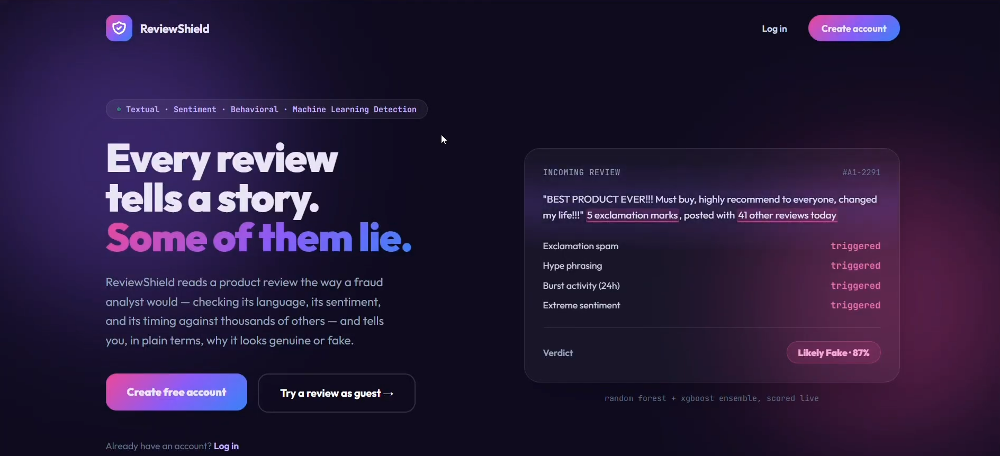

View screenshot ↗Final year project
ReviewShield – Fake Product Review Detection
Developed a web-based application to classify potentially fake and genuine product reviews from Shopee and Lazada. The project explores how machine learning can support consumers in assessing review credibility.
Implemented Random Forest and XGBoost models with text preprocessing, TF-IDF, sentiment analysis and behavioural feature extraction. A second screenshot shows the result interface.
View result screenshot ↗